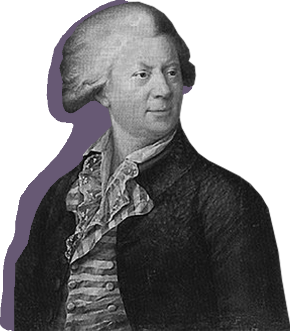

АРХИТЕКТОР
МИХАИЛ ЮРЬЕВИЧ
ФЕЛЬТЕН
ФЕЛЬТЕН
СТРОИТЕЛЬ
ЛУИДЖИ РУСКА

ОБ АРХИТЕКТОРЕ
Помощник обер-архитектора (главного архитектора) Ф. Б. Растрелли, затем директор Академии художеств, создатель неповторимой ограды Летнего сада — таков творческий путь талантливого архитектора Юрия Матвеевича Фельтена.
Юрий Фельтен родился в 1730 году в семье Матиаса Фельтена, главного эконома при Санкт-Петербургской Академии наук. В десять лет он поступил в гимназию при Академии наук. После возвращения на родине Фельтен поступил в Академию наук на архитектурное отделение.
С академическим аттестатом в 1755 году Ю. М. Фельтен поступает на службу к главному архитектору Ф. Б. Растрелли. Обер-архитектор в это время возводил Зимний дворец, и Фельтену представилась возможность помочь ему.
Начав работать самостоятельно, молодой архитектор отдает предпочтение классицизму. Это видно в его первых выразительных произведениях — зданиях Александровского института (1765 1775) и Старого Эрмитажа (1764).
В 70-е годы он строит три церкви: армянско-григорианскую церковь на Невском проспекте (1771-1780) и две лютеранские церкви — св. Анны на Кирочной улице (1775-1779) и св. Екатерины на Большом проспекте Васильевского острова (1768-1771).
В 1770-1780 годы Фельтен занимается постройкой жилых домов в восточной части Дворцовой площади. Впоследствии архитектор К. Росси при строительстве здания Главного штаба, с небольшими переделками включил эти дома в ансамбль Дворцовой площади.
В 1772 году Ю. М. Фельтен стал профессором Академии художеств, а с 1789 года в течение пяти лет был директором Академии. Умер Ю. М. Фельтен в 1801 году.
Свернуть
С академическим аттестатом в 1755 году Ю. М. Фельтен поступает на службу к главному архитектору Ф. Б. Растрелли. Обер-архитектор в это время возводил Зимний дворец, и Фельтену представилась возможность помочь ему.
Начав работать самостоятельно, молодой архитектор отдает предпочтение классицизму. Это видно в его первых выразительных произведениях — зданиях Александровского института (1765 1775) и Старого Эрмитажа (1764).
В 70-е годы он строит три церкви: армянско-григорианскую церковь на Невском проспекте (1771-1780) и две лютеранские церкви — св. Анны на Кирочной улице (1775-1779) и св. Екатерины на Большом проспекте Васильевского острова (1768-1771).
В 1770-1780 годы Фельтен занимается постройкой жилых домов в восточной части Дворцовой площади. Впоследствии архитектор К. Росси при строительстве здания Главного штаба, с небольшими переделками включил эти дома в ансамбль Дворцовой площади.
В 1772 году Ю. М. Фельтен стал профессором Академии художеств, а с 1789 года в течение пяти лет был директором Академии. Умер Ю. М. Фельтен в 1801 году.
ДРУГИЕ РАБОТЫ ФЕЛЬТЕНА
О СТРОИТЕЛЕ
В плеяде зодчих, создавших неповторимо прекрасный облик «пушкинского Петербурга», достойное место занимает один из талантливейших мастеров русского классицизма Луиджи (Алоизий Иванович) Руска.
Луиджи Руска родился в 1762 году в Аньо близ Лугано (Швейцария) в семье «каменных дел мастера» Иеронимо Джованни Руска и вместе с отцом приехал в 1783 году в Россию.
Молодой архитектор начал свою творческую жизнь в Придворном ведомстве. Именно там он приобрел проектную и строительную практику, сотрудничал с Д. Кваренги, В. Бренна и другими крупными зодчими.
Ему довелось трудиться в Ораниенбауме (в соответствии с замыслами А. Ринальди он реставрировал Китайский дворец), создавать внутреннюю отделку Большого дворца в Петергофе, работать в Ропше, а непосредственно в Петербурге — участвовать в застройке Дворцовой площади, в возведении корпусов Конюшенного ведомства (перестроенных В.П. Стасовым), Михайловского замка и Публичной библиотеки.
Одна из первых его самостоятельных работ в центре столицы — здание Обуховской больницы на набережной Фонтанки, 106 (перестроено).
Расцвет творчества Руски пришёлся на первое десятилетие XIX века. В это время он выполнил ряд ответственных проектов в Петербурге и окрестностях, работал в Москве, Киеве и других городах Российской империи. В 1805—1806 годах архитектором была капитально перестроена в готическом стиле Никольская башня Московского Кремля. В 1810 году издал собрание своих проектов, в том числе неосуществлённых, в виде альбома гравюр ин-фолио с пояснениями на французском и итальянском языке. С 1815 года — почётный вольный общник Академии художеств.
В 1818 году подал в отставку и уехал из России с женой и сыном. Строительство Скорбященской церкви в Петербурге в стиле ампир по его проекту завершил его ученик, племянник его жены, архитектор Людвиг Шарлемань. Луиджи Руска умер в 1822 году в городе Валенца, область Пьемонт, Италия.
Свернуть
Молодой архитектор начал свою творческую жизнь в Придворном ведомстве. Именно там он приобрел проектную и строительную практику, сотрудничал с Д. Кваренги, В. Бренна и другими крупными зодчими.
Ему довелось трудиться в Ораниенбауме (в соответствии с замыслами А. Ринальди он реставрировал Китайский дворец), создавать внутреннюю отделку Большого дворца в Петергофе, работать в Ропше, а непосредственно в Петербурге — участвовать в застройке Дворцовой площади, в возведении корпусов Конюшенного ведомства (перестроенных В.П. Стасовым), Михайловского замка и Публичной библиотеки.
Одна из первых его самостоятельных работ в центре столицы — здание Обуховской больницы на набережной Фонтанки, 106 (перестроено).
Расцвет творчества Руски пришёлся на первое десятилетие XIX века. В это время он выполнил ряд ответственных проектов в Петербурге и окрестностях, работал в Москве, Киеве и других городах Российской империи. В 1805—1806 годах архитектором была капитально перестроена в готическом стиле Никольская башня Московского Кремля. В 1810 году издал собрание своих проектов, в том числе неосуществлённых, в виде альбома гравюр ин-фолио с пояснениями на французском и итальянском языке. С 1815 года — почётный вольный общник Академии художеств.
В 1818 году подал в отставку и уехал из России с женой и сыном. Строительство Скорбященской церкви в Петербурге в стиле ампир по его проекту завершил его ученик, племянник его жены, архитектор Людвиг Шарлемань. Луиджи Руска умер в 1822 году в городе Валенца, область Пьемонт, Италия.